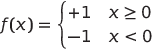

神经网络入门：感知器
课前测验
1957年，康奈尔航空实验室的Frank Rosenblatt首次尝试实现类似于现代神经网络的东西。这是一种名为"Mark-1"的硬件实现，旨在识别原始几何图形，如三角形、正方形和圆形。
 |
 |
|---|---|
图片来源 维基百科
输入图像由20×20光电池阵列表示，因此神经网络有400个输入和一个二进制输出。一个简单的网络包含一个神经元，也称为一个阈值逻辑单元。神经网络的权重像电位器一样在训练阶段需要手动调整。
✅ 电位器是一种允许用户调整电路电阻的装置。
《纽约时报》当时写道感知器：海军期望的电子计算机的胚胎，将能够行走、谈话、看见、写字、复制自己并意识到自己的存在。
感知器模型
假设我们的模型中有N个特征，在这种情况下，输入向量将是大小为N的向量。感知器是一个二分类模型，即它可以区分两类输入数据。我们将假设对于每个输入向量x，感知器的输出将根据类别为+1或-1。输出将使用以下公式计算：
y(x) = f(wTx)
其中f是一个阶跃激活函数

训练感知器
要训练一个感知器，我们需要找到一个权重向量w，该向量可以正确分类大多数值，即使错误最小化。这个错误E由以下方式定义的感知器准则来定义：
E(w) = -∑wTxiti
其中：
- 求和在那些导致错误分类的训练数据点i上进行
- xi是输入数据，ti分别对负例和正例为-1或+1。
这个准则被认为是权重w的函数，因此我们需要最小化它。通常使用一种称为梯度下降的方法，我们从某些初始权重w(0)开始，然后在每一步中根据以下公式更新权重：
w(t+1) = w(t) - η∇E(w)
这里的η是所谓的学习率，∇E(w)表示E的梯度。在计算梯度之后，我们得到
w(t+1) = w(t) + ∑ηxiti
Python中的算法如下所示：
def train(positive_examples, negative_examples, num_iterations = 100, eta = 1):
weights = [0,0,0] # 初始化权重（几乎是随机的 :)
for i in range(num_iterations):
pos = random.choice(positive_examples)
neg = random.choice(negative_examples)
z = np.dot(pos, weights) # 计算感知器输出
if z < 0: # 将正例分类为负例
weights = weights + eta*weights.shape
z = np.dot(neg, weights)
if z >= 0: # 将负例分类为正例
weights = weights - eta*weights.shape
return weights
结论
在本课中，你学习了感知器，这是一种二分类模型，以及如何通过使用权重向量来训练它。
🚀 挑战
如果你想尝试构建你自己的感知器，请试试微软学习中的这个实验，它使用了Azure ML designer。
课后测验
复习与自学
要查看我们如何使用感知器来解决玩具问题以及实际问题，并继续学习，请访问感知器笔记本。
这里有一篇有趣的关于感知器的文章。
作业
在本课中，我们实现了一个用于二分类任务的感知器，并用它来区分类似于手写数字的两类。在这个实验中，你需要完整地解决数字分类问题，即确定给定图像最有可能对应的数字。